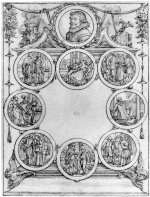
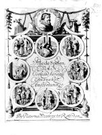

a. Willem Buytewech, Ontwerp voor
het titelblad van G A. Bredero’s Alle de
spelen. Pentekening in bruine inkt, penseel
in grijs, grijs gewassen, 173 x 131 mm.
Rotterdam, 1622(?) --
(Prentenkabinet, 137)
b. Gerbrand Adriaenss Bredero, Alle
de spelen. Rotterdam, by Pieter van
Waesberge, [1622.] -- (1100 D
29)
De koperplaat die door Jan van de Velde naar een ontwerptekening van de in 1591 in Rotterdam geboren Willem Buytewech is gegraveerd (de sporen van de griffel, waarmee de overbrenging van de tekening naar de plaat geschiedde, zijn nog op de tekening zichtbaar), is gebruikt voor de titelpagina van Bredero’s Alle de spelen, in 1622 postuum te Rotterdam bij Pieter van Waesberge verschenen. Het bovenaan geplaatste medaillon met Bredero’s portret is omgeven door een lauwerkrans. Aangezien er geen portretten van Bredero bekend zijn die tijdens zijn leven zijn vervaardigd, heeft Buytewech zich, indirect, gebaseerd op het portret dat Hessel Gerritsz in 1619, een jaar na de dood van de dichter, toevoegde aan de uitgave van de Lijck-dichten. De zich links en rechts van het portret bevindende inktpot, Mercuriusstaf en boeken en papieren symboliseren de dichtkunst.
Omdat de koperplaat bij het afdrukken spiegelbeeldige afbeeldingen oplevert, moest de ontwerptekening op haar beurt spiegelbeeldig worden opgezet. Hierdoor wordt verklaard dat de medaillons op de tekening, te beginnen midden boven, tegen de klok in om een open titelveld zijn gerangschikt. In deze volgorde, die ook die van de stukken in het boek is, bevatten ze scènes uit Griane, Rodd’rick ende Alphonsus, Lucelle, Moortje, Spaanschen Brabander, Klucht van de koe, Nederduytsche rijmen en Stommen ridder. Voor een latere, Amsterdamse, uitgave uit 1638 heeft men deze plaat opnieuw gebruikt, zonder evenwel de nummering van de medaillons aan te passen, hoewel de volgorde waarin de stukken in deze uitgave zijn opgenomen, wel veranderd was.
De door Buytewech toegepaste techniek, een duidelijke contour met de pen en een invulling met het penseel, is voor een graveur gemakkelijk op de koperplaat te vertalen in de lijnen en arceringen waaruit, om druktechnische redenen, een gravure dient te zijn opgebouwd. Nadat de graveur zijn werk gedaan had, bracht de lettersnijder -- een apart specialisme -- in het daartoe opengelaten veld de tekst aan, alsmede de nummering van de medaillons. Buytewech behoorde tot een groep kunstenaars die, allen aan het eind van de zestiende eeuw geboren, de grondslag legden voor een nieuwe kunst, waarbij realisme, samen met een zekere moraal, een belangrijke rol speelde. In Bredero vonden ze een geestverwant. Het lijkt dan ook geen toeval dat juist iemand als Buytewech de ontwerper van deze titelpagina is.
Literatuur
- E. Haverkamp Begemann, Willem Buytewech. Amsterdam 1959, p. 111-113, afb. 130.
- ‘t Kan verkeren. Gerbrand Adriaensz Bredero, 1585-1618. Amsterdam 1968, nr. 38 en 40.
| vorige pagina | top pagina |